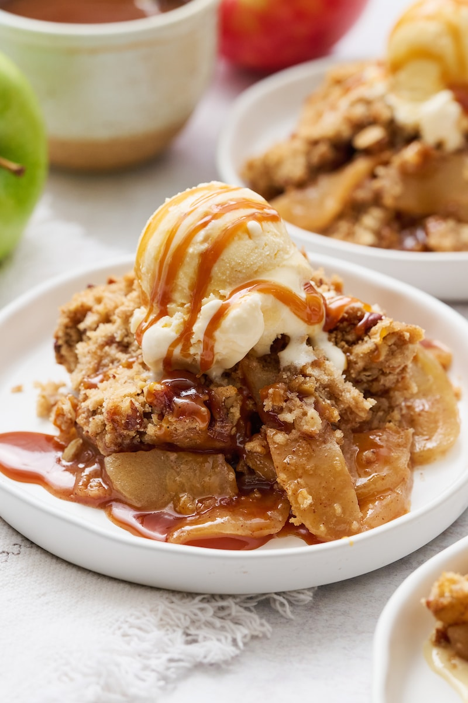

This classic Apple Crisp is the ultimate fall comfort dessert. Tender, cinnamon-spiced apples topped with a golden, buttery oat crumble — it's warm, cozy, and incredibly easy to make. Serve it with a scoop of vanilla ice cream for the perfect finish.
Ingredients
- 6 medium apples, peeled and sliced
- 2 tbsp sugar
- 1 tsp cinnamon
- 1 cup rolled oats
- ¾ cup all-purpose flour
- ¾ cup brown sugar, packed
- ½ tsp salt
- ½ cup cold butter, cubed
Instructions
- Preheat oven to 350°F (175°C). Grease a 9x13 baking dish.
- Toss apples with sugar and cinnamon. Spread in baking dish.
- Mix oats, flour, brown sugar, and salt. Cut in butter until crumbly.
- Sprinkle topping evenly over apples.
- Bake 40–45 minutes until golden and bubbling. Serve warm.